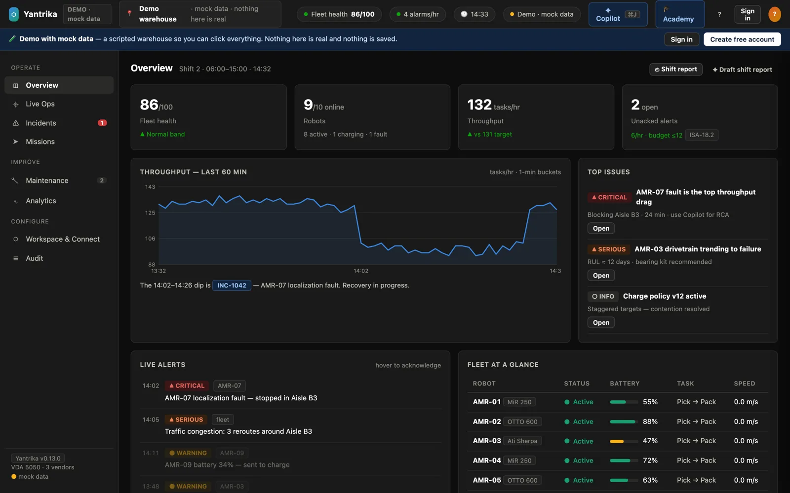

Open source · MIT · Hosted free while in beta · v0.13
The operations layer for every robot on your floor.
Yantrika runs multi-vendor AMR fleets from one console: VDA 5050 connectivity, human-approved commands, automatic incidents, predictive maintenance, real alert delivery and an AI copilot that only ever cites your fleet's own data. Use it hosted, or run the same code yourself.
Prefer a real fleet? Spin up a throwaway live sandbox — no signup, it deletes itself after an hour. Or self-host in three commands.
10 automated test suites, 600+ tests, all passing · VDA 5050 v2.1 · Postgres row-level security · 52-check conformance tester · no tracking on this site.
The console
Everything an operations team needs, on one screen that is never empty.
These are real screenshots of the console in demo mode — the same console you get the moment you sign up. Click a tab, or open it yourself.

Two ways to run it. One codebase.
Hosted when you want speed. Self-hosted when you want control.
Yantrika Cloud
Create an account; a private workspace exists before you finish reading this sentence.
- Your own site, admin role, team invites with four roles
- Ingest keys — connect robots over VDA 5050 or REST in minutes
- One-click simulated fleet so the console is never empty
- Incidents, maintenance, notifier and copilot already running
- Data isolated per workspace by Postgres row-level security
Self-hosted
The exact same platform, MIT licensed, on your laptop, your Docker host or your cloud account.
- Loopback mode: full stack, zero cloud, zero keys, offline
- Your own Supabase or Postgres with ordered, checksummed migrations
- Scripted EC2 and Azure deployments with HTTPS and Key Vault
- Demo → hardened → RBAC posture, each an opt-in migration
- Every component ships its own offline test suite
$ git clone https://github.com/punith-naga/yantrafleet.git && cd yantrafleet
$ ./install.sh
$ .venv/bin/python -m yantraops up --loopbackHow it works
Robots in, decisions out — with a human in the loop.
Robots publish state
Over VDA 5050 v2.1 on MQTT, through yantrabridge; or over plain REST from anything that speaks HTTPS; or from the bundled deterministic simulator. Each writer holds an ingest key that can only touch its own site.
Services act on one schema
The detector opens and resolves incidents with idempotent ids and flap guards. The maintenance engine trends telemetry into findings with RUL and confidence. The notifier fans out to Slack, Discord, webhooks and WhatsApp.
People stay in control
Pause, send-to-charge and e-stop never execute directly — they queue for a manager's approval, go out as VDA 5050 instantActions, and land in an audit trail with who asked, who decided, and what happened.
What you get
Built like infrastructure, not a dashboard demo.
Live fleet console
Map, per-robot drawer, alerts with ISA-18.2 alarm budgets, missions, a command palette, a guided tour and a printable shift report. One HTML file, no build step.
Human approval gate
Robot commands queue as pending rows; approving needs the manager role, enforced by a SECURITY DEFINER function in Postgres — not by the UI.
Incident detection & replay
PagerDuty-style lifecycle from telemetry; open an incident to scrub recorded position, battery and speed around the event.
Predictive maintenance
Drive-motor temperature trends, abnormal battery drain and drivetrain decline become findings with a remaining-useful-life estimate and an action.
Sarathi, the AI copilot
Answers from live rows with cited evidence; works offline on templates and gets smarter with an LLM key. Also exposed as MCP tools for Claude Desktop and other agents.
Roles, audit, security
Four roles scoped per site, Supabase Auth, row-level security, signed webhooks, a live audit-security command and SOC 2 / ISO 27001 / EU AI Act mappings.
Operator academy
Role tracks, quizzes and a live-verified checkride certification — practicals are checked against the real tables, not self-reported.
VDA 5050 conformance tester
52 checks against v2.1 with a graded HTML report that names the clause, the expectation, what the vehicle did and how to fix it. Free, no account.
Ready to integrate
Speaks the protocols your floor already uses.
Nothing proprietary on the wire. Every path below is documented with copy-paste snippets inside the console and on the integrations page.
Try it before you sign up
Two doors, no account behind either.
Demo with mock data
The complete console on a scripted warehouse: a localization fault, an incident replay, a maintenance story, the copilot. Instant, nothing saved.
Live sandbox fleet
A private throwaway site with its own simulated fleet, real rows, real incidents, a copilot grounded on them. It runs for about an hour, then deletes itself and its data.
Security & isolation
Tenancy enforced by the database, not by the app.
Every workspace is a site_id. A person's roles are rows in user_roles; a machine's ingest key resolves — through one SQL function — to exactly one site, or to nothing. Every read and write policy on every fleet table is pinned to that value, so a missing, revoked or guessed credential sees nothing and writes nothing.
Secrets are hashed at rest, webhooks are HMAC-signed, the copilot reads as the person asking, and yantraops audit-security tells you which posture a deployment is actually in. Read the security model →
Compliance mappings, documented honestly
SOC 2 CC-series, ISO 27001, EU AI Act Article 14 (human oversight by design), ISA-18.2 alarm KPIs, NIST CSF and a VDA 5050 conformance statement — with the gaps listed next to the controls. docs/COMPLIANCE.md
Common questions
Straight answers.
Is there a hosted version of Yantrika?
Yes. Yantrika Cloud at yantrika.ai is the hosted platform: create a free account and you get your own workspace with ingest keys to connect robots, a one-click simulated fleet, and role-based seats for your team. The same code is open source under MIT, so you can also self-host it on your own infrastructure.
Can I see it without creating an account?
Yes, two ways. The demo opens the full console on scripted mock data instantly with no login. The live sandbox mints a throwaway site with a real simulated fleet for about an hour, also with no signup or email.
Does it work with robots from more than one vendor?
That is the point of it. Robots talk to Yantrika over VDA 5050 v2.1, the open vendor-neutral MQTT protocol for AMR fleet communication, so any vehicle that implements the standard can be driven from the same console. Anything else can publish over plain REST.
What does it cost?
Yantrika Cloud is free while in beta, and the software is MIT-licensed open source with no paid tier, no enterprise edition and no feature held back. Self-hosting costs whatever infrastructure you choose to run it on. Pricing details →
How do I check whether my robots actually implement VDA 5050 correctly?
Run yantra-conform, the free conformance tester that ships with Yantrika. It grades a fleet against 52 checks drawn from VDA 5050 v2.1 and writes a single HTML report naming the clause, what was expected, what your vehicle actually did, and how to fix it. Here is what it tests and how to run it.
Your fleet, on screen, in about a minute.
Create a free workspace, start the simulated fleet, then point your real robots at it whenever you are ready.